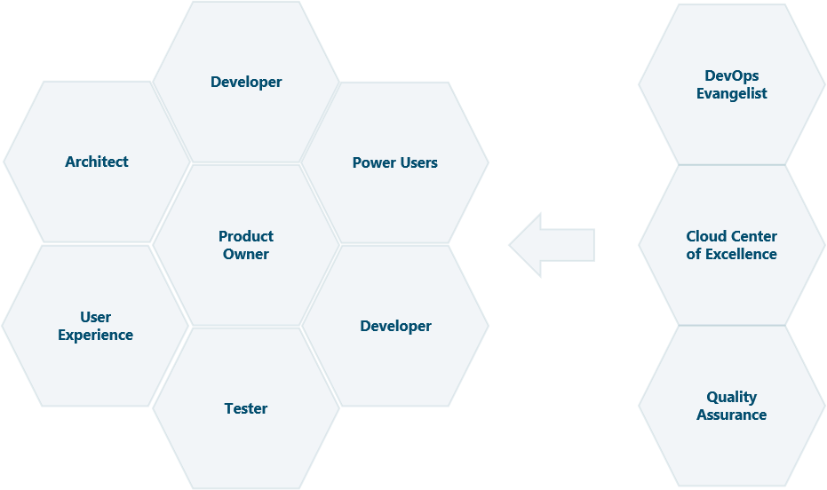
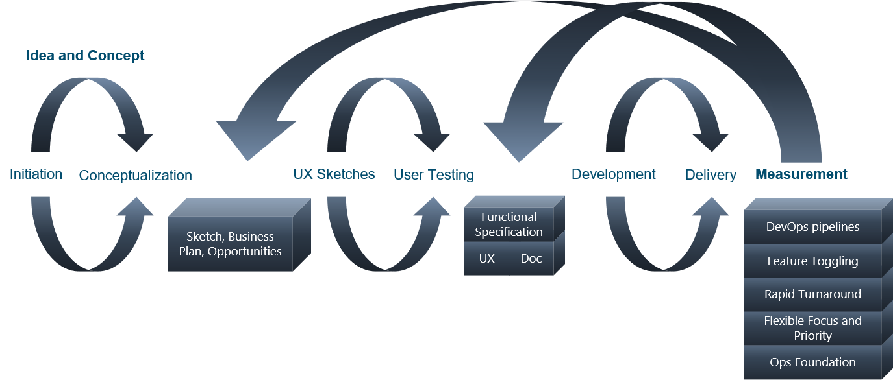

Cells of Anarchy
Radical Software Development Process for High Performance Continuous Delivery
What it is
"Cells of Anarchy" is an opinionated process ("a series of actions or steps taken in order to achieve a particular end.") that attempts to optimize the end of becoming high performance teams that does continuous delivery of software.
DISCLAIMER: This process is not for everyone. Read it, learn it, adopt it, evolve it.
Introduction
If you are currently unsatisfied with the performance of your own ability, or your teams ability, to deliver software, consider adopting the process of Cells of Anarchy.
In many ways this is a radical departure from traditional software development processes (principles/practices), which does not focus on delivery, but rather ceremony, reporting and management.
Too much focus has been on frameworks such as Scrum, but these are extremely basic and lacking any software principles or practices. It is not optimized to enable teams to work on complex and mentally challenging tasks.
The Cells of Anarchy process stands behind Twelve Principles of Agile Software and through the opinioated and defined process, realizes these principles.
While other development processes might result in some adoption of the principles, the Cells of Anarchy process supercharges the teams ability to successfully adopt the principles.
Tenets
- Small teams, or cells, that are independent and self-contained, one team per product.
- The Super cell is the central based needed to provide a solid base for the different cells, and include culture, marketing, HR, finance, and technology. The relationship is flat, nonhierarchical. Goal is to enable the teams (Cells) to concentrate on the product development.
- Purpose: The single most important ingredient in team success is a clear, common, and compelling purpose
- Communication: Open, honest, robust and transparent communication
- Goals: Clear objective and goals that is fully understood by team members
- Team: Team is formed and self-organized. Support the team, the team (and its individuals) comes first. Team is more important than product.
- Decisions: Effective Decision Making
- Continuous: Change continuously, adopt quickly, always open, not just product. Quick feedback loop strengthen communication and trust.
- No estimation: You are not qualified to make an estimation, accept it and move on.
- Market schedules and plans:
- Flow Zone
- Constraints
Purpose
1. Common purpose. The single most important ingredient in team success is a clear, common, and compelling purpose. Too often, a team’s purpose is ill-defined, uninspiring, or foggy, leaving the team to figure out what success is supposed to look like. Teams are merely a means to an end — a method of achieving desired outcomes that are too big to reach through individual efforts; they are not the end itself. And it is team purpose that provides the reason for collaboration. A clear, compelling purpose gives reason for people to commit to a team. A common purpose not only calls the team together, it also holds the team together during the inevitable turbulence that will be experienced on the journey. The power of a team flows from the alignment of each member to the purpose. Creating this alignment is one of the most important roles of leadership. Misaligned teams are often a clear indicator of poorly led teams. There are five key criteria essential for team alignment: • Clear: I see it. The benefits of team effort are understood by everyone. • Relevant: I want it. Team purpose and goals align to individual goals and interests. • Significant: It’s worth it. Team objectives are of sufficient magnitude to make the work worth the effort. • Achievable: I believe it. Everyone believes the team purpose is realistic and attainable. • Urgent: I want it … now! A sense of timeliness drives behavior. The above is straightforward. However, aligning to a common purpose is harder than it looks. A common mistake is to launch the team too quickly and push them into implementation before members have had the opportunity to coalesce around a purpose and ensure that everyone is aligned to it. In short: No team purpose, no team.
Communication
Excellent communication. Communication is the very means of cooperation. One of the primary motives of companies choosing to implement teams is that team-based organizations are more responsive and move faster. A team cannot move faster than it communicates. Fast, clear, timely, accurate communication is a hallmark of high levels of team performance. High-performance teams have mastered the art of straight talk; there is little motion wasted through misunderstanding or confusion. The team understands that effective communication is essential, and as a result, they approach communication with a determined intentionality. They talk about it a lot and put effort into keeping excellent team communication. You will notice that the team model now circles back to common purpose, the first characteristic of a high-performance team. The connection is intentional, for a team cannot maintain unity of purpose without exceptionally good communication among team members. Once a team loses its ability to communicate well and thereby understand one another, it quickly loses its sense of purpose. Confused communication and unity of purpose cannot coexist. When it comes to building high-performance teams, these six characteristics are the essential few. If a team gets these things right, it will raise the probability of success and therefore achieve its desired outcomes. Open and Honest Communication A hallmark of the high performance team is a high level of open, honest, robust and transparent communication. High performance teams increase trust by building a culture of partnership and shared values. This starts with open and honest communication. When honesty and transparency are lacking there can be no trust. Without trust teams fail to solve problems or make decisions. Without trust teams are crippled by conflict.
Goals
Goals should be business KPIs that are clearly defined, achievable but also stretch goals to ensure team is performing and getting into flow-zone.
Team
After the team has been set, it must be built through the continuous process of improvement. This means that the team can and should change, if the team does not work optimally. The end goal is team members who themselves understand that their fitness is not well for the team.
Effective Decision Making
Being able to perform effective decision is essential for keep flow and productivity high in the team. Defined lines of responsibility.
Team must have continuous and immediate access and feedback from product owner. Product owner that is not available, should be replaced.
Fixing wrong output from wrong decisions CAN be faster than time spent on waiting for decision, but not always. Allow team to trust their judgement and avoid negative results from wrong decisions.
Kanban
Flexibility
Focus on continuous delivery
Reduction of wasted work / wasted time
Increased productivity
Increased efficiency
Team member’s ability to focus
… Kanban is flexible
Kanban is a pull system
Team members pull the next task, don’t waste time deciding what to do next.
Minimizes the wasted (less value) work while delivering the product as specified in the customer’s business requirements.
Process Cycle
- Product Owner, UX Designer, Architects work together with Customer/User to define the Functional
Specification:
- Functional Specification Document (FSD)
- Graphical User Interface sketches
-
Developers:
- Pull task from backlog, minimize current active work (1 pr. developer)
- Make decisions or consult with product owner, which should always be available
- Work until deployed in production
-
Product Owner and stakeholders follows progress updates and continuously deliver feedback and re-prioritize
the
product backlog:
- Product owner can schedule and plan meetings with customer/user at any interval that works well
- Product owner must ensure that customer/user have workshops and are made available to developers throughout the delivery
Notes: The Product Owner, together with the UX Designer and architects (functional, business, technical) must sit together with customer/user and design the graphical user interface and define both the introductional and high-level Functional Specification Document. Additionally these roles must define the product backlog and keep it up-to-date on a daily basis. The developers should spend no time on estimation. No time on figuring out what task to perform next, other than picking a task that fits well for their level of expertise and knowledge. Developers should not pick too challenging tasks until the MVP has been delivered. Developers should make as many decisions as possible, but most decisions must be made in the UX work, functional specification and product back log items. Product Owner must be available for clarification all the time. There are no alternative to not having a product owner available at any time. If the product owner is not available, the process will fail. Developers won’t be able to complete their current tasks, which results in taking on other tasks, which again will lack clarification, and the individual tasks upon each team member grows and becomes a major bottleneck for high-performance. The only definition of done, is running code deployed to production. Team should not spend any time on definition any other definition of done. Deployment should be automated fully into production, no manual approval required. This means that the initial deployment must first go to a staging/integration environment for automated testing. A timed delay can be added, so to be able to stop the automated deployment if needed. If possible, deploy continuously to production. Use feature toggling to enable and disable functionality of the system. Ensure there are multiple levels of feature toggled access, the developers need to keep certain functionality hidden from the rest of the team, to avoid confusion and feedback on prototype and test functionality. The team should perform no estimation of the tasks. The team should perform no estimation of the business value of a task. The team should use common sense and critical thinking of the tasks align with the PURPOSE and GOAL of the product. If the task does not fit with PURPOSE and GOAL, take it up immediately with the product owner for clarification. The product owner have prioritized it high for a reason, so get clarification quickly. The product owner can schedule milestones, meetings, releases as much as they want, but this should not be communicate to the team. The team should never have any deadline, never, ever. The first tenant of the process, is QUALITY. There will no quality of delivery if there is any deadline for any delivery. The team will continuously deliver, and the product owner (and other stakeholders) can test and verify what functionality is complete and the quality of the functionality. Based on what is actually being delivered, they can schedule marketing events and release to customers at any phase that fits with the rest of organization and market.
Functional Specification to Backlog
The product owner owns the backlog on Epic and Feature level
The teams owns the backlog on User Story and Task level
Product owner owns the prioritization responsibility of the product backlog
No Estimation
Estimation should not be used in any capacity in the cell.
A lot of theory on estimation exists, refer to other sources on the value of No Estimation.
The super cell can utilize experts for rough estimates (Rough Order of Magnitude) – they do not belong to the team, so team is not accountable
Avoiding estimations is important to get quality in delivery – one cannot get both schedule and quality.
Market schedules and plans
The cells cannot deliver what it cannot deliver – market schedules should be based on reality of cell output.
The company/marketing can independently organize market events and schedule for functionality availability for customers/user.
End goal: All new functionality is done in good time before released to market.
Flow Zone
Important to utilize team members strengths and get everyone into the flow-zone.
Everybody doesn’t need to know everything. If you are the best, you do it.
Avoid too much challenge, and too much boredom. Too much challenge/learning hinders high performance.
Balance is key and require a concious effort of the cell as a whole and the individual.
Constraints
An absolute maximum of 10 team members, effectiveness will dwindle when larger.
The teams are like cells, unless all functions is part of the team, the cell will be dysfunctional.
FAQ
Q: What about quality?
A: Quality should not be a metric for the cell. If the cell is able to keep the members in the flow-zone, then quality will be the result of the output. Active, engaged and willing members of a cell will result in high quality output. Focus on quality will have deterimental effect on the actual quality.